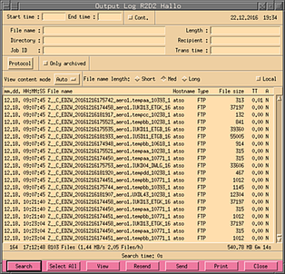
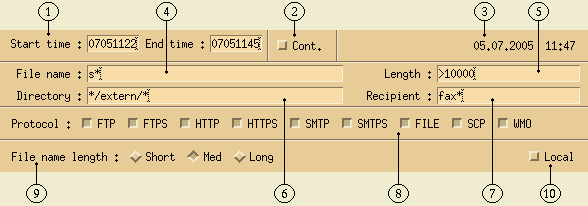
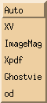
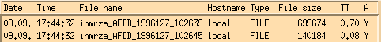
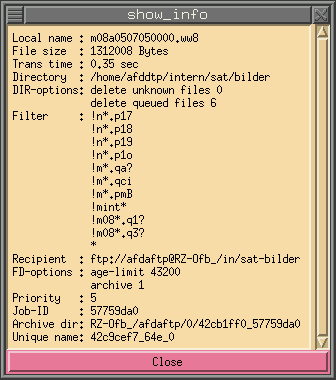

All files that have been transmitted by the AFD, can be viewed
with the help of this dialog (see Output Log).
However, only those files will be shown where the option
no log output was NOT set.
This option is commonly used to reduce the overhead caused by logging.
Since the output log can be very extensive, there are lots of possibility
to reduce the search time by filling in some of the following values:

| 1 |
Enter the start and end time of the search. If no value is entered
it will always take the earliest or latest entries it finds. There
are two time forms. One is the absolute and the other is the
relative time format. The following absolute forms are possible:
MMDDhhmm, DDhhmm and hhmm (MM = month [01-12], DD = day [01-31],
hh = hour [00 - 23], mm = minute [00 - 59]). The relative form
always starts with a hyphen '-' and has the following format:
-DDhhmm, -hhmm or -mm. |
|
| 2 |
When set the output log will be shown continuously, ie. if new entries
come they will be shown live as they come in. |
|
| 3 |
Shows the current date and time in the following format:
DD.MM.YYYY hh:mm |
|
| 4 |
Enter a file name. The name may have any number of the two following
wild cards: * and ?. If no file name or wild card is entered it will
always search for all file names. Multiple file names/patterns can be
entered by separating them with a pipe (|). |
|
| 5 |
Here it is possible to enter the length/size of a file. If a <,
> or ! sign is put before the size value, it will search for files
less then, greater then or not the given size. |
|
| 6 |
The source directory where the AFD has picked up the file. Even here
it is possible to enter wild cards. Sometimes it can be easier if
you just enter the directory ID. However this must have a leading
# for it to be detected as directory ID. One can also enter
the directory alias with a leading @ sign. Multiple directory
names and/or ID's can be entered by separating them with a comma (,). |
|
| 7 |
Here you can enter a remote host name and only files that where
send to this host will be shown. It is also possible to enter more
then one host, by separating the hosts with a comma (,). Wild cards
can also be used. When using the syntax <user>@< hostname>
it is possible to narrow down the search to a specific user
on that host. |
|
| 8 |
The Job Identification Number to search for. This is a hexadecimal
number which can be found at the end of each line in TRANSFER_LOG.
This number may also be entered with a leading #. Multiple
numbers can be entered by separating them with a comma (,). |
|
| 9 |
Transport time. Search for the time it took to transport a file to
it's destination. If a <, > or ! sign is put before the time
value, it will search for files that took less then, greater then or
not the given value. Values are in seconds. It is possible to enter
decimal values, lowest value is 0.01. |
|
| 10 |
Here it is possible to select by the protocol that the data was
transmitted. The dialog on the right shows the options possible. |
 |
| 11 |
When selected, only archived data will be shown. |
|
| 12 |
When selected, only confirmed data will be shown. Confirmed
is where the protocol does support this. Not yet implemented. |
|
| 13 |
How the content of a file in the archive is viewed. When set to
Auto, then the viewer specified by the pattern for the
parameter
VIEW_DATA_NO_FILTER_PROG will be selected. A special viewer
can also be configured via the
VIEW_DATA_PROG parameter in $AFD_WORK_DIR/etc/AFD_CONFIG. |
 |
| 14 |
These toggle buttons allow the user to toggle between different length
of the file name in the list box. The short one is useful when
printing on A4 paper. |
|
| 15 |
File names displayed will be those before being send ie. local.
When pressed they will be shown how they where stored on the
remote side. |
|
It is not necessary to fill in any values, however then the search might
take a very long time for it to finish, depending on how long and how many
log files there are. While the dialog is searching for data, the function
of the search button changes into a stop button, enabling the user to
interrupt the search. This button and the slider of the list widget are the
only buttons that are active during a search. Thus, the user can search in
the list widget by using the slider, while the dialog is still searching.
Once a search is interrupted, the search will always start from the beginning.
Here follows a short description of the list widgets and the meaning of
each item:

| Date |
The date in the following format: MM.DD. where MM is the month
(01-12) and DD is the day of the month (01-31). |
| Time |
The time in the following format: hh:mm:ss where hh is the hour
(00-23), mm is the minute (00-59) and ss is the second (00-59). |
| File name |
The file name as it was distributed. |
| Hostname |
The host name of the remote host. |
| Type |
The protocol with which this file was distributed. Currently there
are three protocols: FTP, SMTP and LOC. |
| File size |
The size of the distributed file in bytes. |
| TT |
Transfer time. This is the time taken for this file to be
transmitted. |
| A |
Archive/type flag. The meaning of this flag is as follows:
Y - Is archived and is still in archive.
D - Is archived, however it has already been deleted.
N - Is not archived.
* - Receive job.
d - Confirmation of dispatch.
r - Confirmation of receipt.
R - Confirmation of retrieve.
t - Confirmation deleted due to timeup.
|
When the file name is longer then it is shown in the list widget it is
still possible to view it by using the 'AFD info click'. This is done
by pressing the right mouse button while the cursor is over the wanted
item in the list widget. The following window will pop up:

As shown, this window also shows what the entry in the DIR_CONFIG looked
like when this file was send. Thus it is always possible for the AFD
system administrator to see with what options the files are distributed,
regardless how many changes there where in the DIR_CONFIG file.
Right under the list widget is a summary line which looks as follows:
![[summary line]](../images/output_log_summary.gif)
| 1 |
The time in days from the first entry found to the last entry in
the list. |
| 2 |
The rest time in hours, minutes and seconds. |
| 3 |
The total number of files found. |
| 4 |
The average transfer rate. This is calculated from the values
found in 6 and 7. |
| 5 |
The average number of files transmitted. This is calculated from
the values found in 1, 2 and 3. |
| 6 |
Total number of bytes transferred. |
| 7 |
Total time used for transferring the files. |
Under the summary line follows a status line showing the current status,
here how long it took for the search:
At the bottom is a line with up to six (depending on user permissions) buttons
which have the following meaning:
| Search |
Pressing this button will start the search. During the search the
name of the button will change to Stop. Pressing this will interrupt
the search and the button will be renamed to Search again. Pressing
search again will start the search from the beginning and not where
it was when it was interrupted. |
|
| View |
Depending on what is configured in
AFD_CONFIG, this will show the image or the content of
the dialog. By default when nothing is configured it will
show the content of the file as shown on the right side. See
VIEW_DATA_PROG
for more details on how to set this to use other programs
to view the data. Only data that is in the archive can be
viewed. |
 |
| Resend |
The selected files will be resend if they are in the local archive. |
|
| Send |
This will popup the xsend_file dialog
which will allow you to send the selected files to some other
destination if the selected files are in local archive. |
 |
| Print |
This will popup another dialog which can be used to print what is shown
to a separate file, send it in a mail to someone or print it to a
printer. The Range field allows to specify what will be printed,
either what has been selected or everything. |
 |
| Close |
Closes this dialog. |
|
![[red dot]](../images/reddot.gif)